리눅스마스터-2급 (2013-06-17 기출문제)
1과목: 리눅스 운영 및 관리
1. 일반적인 리눅스의 디렉터리 구성에 대한 설명으로 알맞은 것은?
- /usr : 사용자(user) 데이터 저장 디렉터리
- /etc : 각종 시스템 설정 파일 저장 디렉터리
- /dev : 개발 도구 저장 디렉터리
- /var : 라이브러리 저장 디렉터리
(정답률: 76%)

2. 다음 중 명령어를 한 번만 사용하여 파일의 소유자와 소유그룹을 동시에 변경하려할 때 알맞은 것은?
- chmod
- chgrp
- chown
- chsh
(정답률: 67%)
3. 현재 IHD.TXT라는 파일의 속성이 다음과 같다. 소유자에게는 읽기/쓰기/실행 권한을 부여하고, 그룹과 다른 사용자에게는 읽기 및 실행 권한만 부여할 때 ( 괄호 )안에 들어갈 내용으로 알맞은 것은?
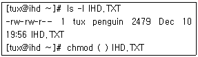
- a=rx,g-w
- u=rwx,g+x,o+x
- a+rx
- a+x,g-w
(정답률: 65%)
4. 다음 중 리눅스 파일에 대한 설명으로 틀린 것은?
- 디렉터리파일은 파일 및 디렉터리의 이름뿐 아니라 해당 파일 및 디렉터리에 대한 포인터가 들어있는 파일이다.
- 일반파일은 텍스트, 또는 실행 가능한 바이너리 프로그램 및 여러 가지 유형의 데이터를 포함 할 수 있다.
- 파일명 내에 공백이나 필드분리자를 포함할 수 있다.
- 파일확장자의 의미가 없으며, 파일 속성을 변경 하여 실행 파일로 사용할 수 있다.
(정답률: 75%)
5. 현재 /PROJECT 디렉터리의 정보는 아래의 <보기>와 같다. /PROJECT 디렉터리의 설정을 아래의 <조건> ⓐ, ⓑ, ⓒ에 충족하도록 변경하려 할 때 알맞은 것은?
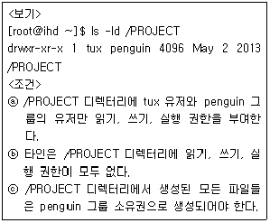
- chmod 0770 /PROJECT
- chmod 1770 /PROJECT
- chmod 2770 /PROJECT
- chmod 4770 /PROJECT
(정답률: 67%)
6. 다음 중 네트워크상의 많은 컴퓨터들이 각각의 시스템에 가진 파일들을 서로 쉽게 공유하기 위해 제공되는 파일 시스템으로 알맞은 것은?
- ftp
- ext2
- xfs
- nfs
(정답률: 74%)
7. 다음 중 quota에 대한 설명으로 틀린 것은?
- 사용자나 혹은 그룹이 가질 수 있는 inode 수 또는 할당된 디스크 블록의 수를 제한한다.
- quotaon은 quota를 가동시킬 때 사용한다.
- quota는 사용자별, 파일시스템별로 적용된다.
- quota는 사용자별 네트워크 사용량을 제한할 때에도 사용한다.
(정답률: 69%)
8. 다음 중 fsck 명령의 옵션에 대한 설명으로 틀린 것은?
- -A : 어떤 질문도 하지 않고 파일 시스템에서 발견되는 모든 문제를 자동으로 수리
- -r : 파일 시스템을 수리하기 전에 확인을 요청
- -V : 수행 중인 사항에 대한 추가정보를 인쇄
- -s : 파일 시스템을 점검하기 전에 슈퍼블럭을 나열
(정답률: 52%)
9. 다음 중 du 명령을 이용하여 계산되는 파일이 심볼릭 파일이면 그 원본의 값을 보여주는 옵션으로 알맞은 것은?
- -D
- -l
- -S
- -h
(정답률: 40%)
10. 다음 중 시스템에 새로운 파일 시스템을 생성하여 사용 할 때 사용되는 명령어의 순서로 알맞은 것은?
- fdisk -> mkfs -> mount
- mkfs -> fdisk -> mount
- mkfs -> mount -> fdisk
- mount -> mkfs -> fdisk
(정답률: 82%)
11. 다음 중 확장 C쉘로 명령행 편집기능을 제공하는 쉘로 알맞은 것은?
- Tcsh
- bash
- sh
- csh
(정답률: 64%)
12. 다음 중 BASH 쉘의 내부명령어로 틀린 것은?
- alias
- cd
- ls
- history
(정답률: 65%)
13. 다음 중 Bash에서 사용되는 유용한 키에 대한 설명이다. 아래의 보기 (ⓐ)-(ⓑ)-(ⓒ)에 들어 갈 키가 순서대로 나열한 것으로 알맞은 것은?
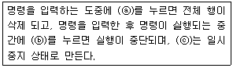
- Ctrl-Z , Ctrl-C, Ctrl-U
- Ctrl-C , Ctrl-U, Ctrl-Z
- Ctrl-U , Ctrl-Z, Ctrl-C
- Ctrl-U , Ctrl-C, Ctrl-Z
(정답률: 64%)
14. 다음은 쉘의 동작 메커니즘 중 사용자의 명령을 시스템에 전달하기 위하여 거치는 단계의 순서도 이다. 아래의 보기 (ⓐ)-(ⓑ)-(ⓒ)-(ⓓ)를 나열 한 것으로 알맞은 것은?
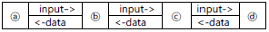
- Terminal, Device Driver, Shell, Linux Kernel
- Terminal, Shell, Device Driver, Linux Kernel
- Linux Kernel, Shell, Device Driver, Terminal
- Linux Kernel, Device Driver, Shell, Terminal
(정답률: 69%)
15. 다음 중 사용자의 현재위치를 나타내주는 역할을 하며, cd 명령을 수행할 때마다 변경이 되는 환경변수로 알맞은 것은?
- PATH
- PS1
- PWD
- HOME
(정답률: 76%)
16. 다음 중 BASH 환경에서 alias를 설정하는 방법으로 알맞은 것은?
- set alias 'mkdir -p'=mkd
- set alias mkd='mkdir -p'
- alias 'mkdir -p'=mkd
- alias mkd='mkdir –p’
(정답률: 65%)
17. 다음 중 BASH의 히스토리 기능을 이용하여 바로 이전 명령을 재실행 하려고 할 때 사용하는 쉘 예약어로 알맞은 것은?
- ?#
- ??
- !#
- !-1
(정답률: 72%)
18. 다음 중 쉘의 환경변수인 PATH에 신규 디렉터리를 추가하려 할 때 사용하는 명령으로 알맞은 것은?
- PATH=$PATH!newpath
- PATH=$PATH:newpath
- $PATH=PATH!newpath
- $PATH=PATH:newpath
(정답률: 83%)
19. 다음 중 실행 상태에 있는 프로그램의 인스턴스(instance)를 의미하는 용어로 알맞은 것은?
- process
- program
- protocol
- signal
(정답률: 82%)
20. 다음 중 프로세스 간의 통신수단을 뜻하는 용어로 알맞은 것은?
- signal
- fork
- jobs
- channel
(정답률: 76%)
21. 리눅스에서 최초로 프로세스가 실행될 때 /etc/inittab 파일을 호출하는 프로세스로 알맞은 것은?
- init
- shell
- cron
- df
(정답률: 85%)
22. 다음 중 프로세스의 현재 상태 중 좀비(zombie)상태를 나타내는 것으로 알맞은 것은?
- S
- I
- T
- Z
(정답률: 91%)
23. 다음 중 suspend된 것을 background로 실행하기 위한 방법으로 알맞은 것은?
- ctrl + z
- ctrl + c
- bg %<작업번호>
- fg %<작업번호>
(정답률: 82%)
24. 다음 시그널 번호 중 무조건 종료할 때 사용하는 것으로 알맞은 것은?
- 1
- 2
- 9
- 15
(정답률: 81%)
25. 다음 중 ps 명령어를 사용하여 세션 리더를 제외하고 터미널에 종속되지 않은 모든 프로세스를 출력할 때 사용하는 옵션으로 알맞은 것은?
- -a
- a
- -f
- f
(정답률: 68%)
26. 다음 중 top 명령어를 사용하여 CPU 사용률에 따라 정렬하여 출력하는 옵션으로 알맞은 것은?
- i
- I
- m
- P
(정답률: 57%)
27. 다음 명령 결과에 대한 설명으로 틀린 것은?
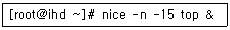
- top을 백그라운드에서 실행하면서 NI값이 -15 감소한다.
- top은 기존보다 높은 우선순위를 갖게 된다.
- 우선권 순위는 -20에서 19까지의 수치 값을 갖게 된다.
- 이미 실행중인 프로그램의 우선 순위를 조절 할 수 있다.
(정답률: 57%)
28. 다음 중 /root/time_start.sh라는 파일을 매주 월요일 오전 6시에 사용자 ihd 권한으로 실행하기 위하여 crontab에 등록할 경우 알맞은 것은?
- 0 6 * * 1 su - root -c '/root/time_start.sh' >& /dev/null
- 0 6 * * 1 su - ihd -c '/root/time_start.sh' >& /dev/null
- * * * 6 1 su - ihd -c '/root/time_start.sh' >& /dev/null
- * * * 1 6 su - root -c '/root/time_start.sh' >& /dev/null
(정답률: 80%)
29. vi 편집기에서 ihd.txt 파일을 읽기 전용(read-only)으로 열 때 사용하는 명령어로 알맞은 것은?
- vi +r ihd.txt
- vi -r ihd.txt
- vi -R ihd.txt
- vi +R ihd.txt
(정답률: 53%)
30. vi 편집기 Ex 모드에서 외부 명령어를 실행하는 명령으로 알맞은 것은?
- !
- ?
- |
- #
(정답률: 58%)
31. vi 편집기에서 편집 버퍼 이동 명령으로 알맞은 것은?
- ＜Ctrl + B> : 반 화면 위로 이동
- ＜Ctrl + F> : 한 화면 아래로 이동
- ＜Ctrl + U> : 반 화면 아래로 이동
- ＜Ctrl + D> : 한 화면 아래로 이동
(정답률: 51%)
32. vi 명령어 중 편집 중인 파일을 저장하지 않고 종료하는 명령으로 알맞은 것은?
- :wq!
- :wq
- :w
- :q!
(정답률: 86%)
33. vi 편집기에서 / 또는 ? 명령에 같은 방향으로 반복적으로 패턴을 검색하는 명령어로 알맞은 것은?
- n
- N
- u
- J
(정답률: 67%)
34. 다음 vi 명령 실행의 결과로 알맞은 것은?
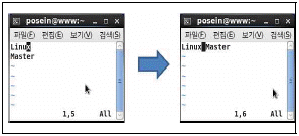
- J
- p
- u
- a
(정답률: 58%)
35. 다음 중 rpm 명령어 옵션에 대한 설명으로 알맞은 것은?
- rpm -e : 패키지 의존성 무시
- rpm -U : 패키지를 업그레이드
- rpm -i : 패키지 정보 출력
- rpm --nodeps : 해당 작업을 강제로 진행
(정답률: 62%)
36. 다음 RPM 패키지 구조에서 아키텍처를 뜻하는 부분으로 알맞은 것은?
- kernel
- 2.6.18
- 308
- x86_64
(정답률: 83%)
37. 다음 중 rpm 명령을 사용하여 mozila가 설치 되었는지 확인하는 명령어로 알맞은 것은?
- rpm -qa | grep mozila
- rpm -Uvh | grep mozila
- rpm -ivh | grep mozila
- rpm -e | grep mozila
(정답률: 77%)
38. 다음 중 아카이브(archive) 확장자 설명으로 알맞은 것은?
- .Z : gzip로 압축된 아카이브이다.
- .bz2 : tar로 압축된 아카이브이다.
- .zip : zip로 압축된 아카이브이다.
- .gz : zcat을 사용하여 압축된 tar 아카이브이다.
(정답률: 69%)
39. 다음 중 gzip명령어의 옵션에 대한 설명으로 알맞은 것은?
- -d : 압축을 한다.
- -l : 현재 압축된 파일의 내용을 보여준다.
- -v : 버전 상태를 알려준다.
- -r : 서브디렉토리에 있는 파일은 압축을 안한다.
(정답률: 47%)
40. 다음 중 zip 파일로 압축되어 있는 텍스트 파일의 압축을 풀지 않고 내용만을 볼 때 사용하는 명령어들로 알맞은 것은?
- zmore, zless, zcat
- zmore, zless, zzip
- zmore, zcat, zcompress
- zmore, zcat, ztar
(정답률: 67%)
41. 다음 중 ihd.tar.gz 압축하고 묶기 위한 명령어로 알맞은 것은?
- tar -xvzf ihd.tar.gz
- tar -cvzf ihd.tar.gz
- tar -cvf ihd.tar.gz
- gzip -xvzf ihd.tar.gz
(정답률: 69%)
42. RPM 설치시 --force을 사용할 때 포함되는 옵션으로 틀린 것은?
- replacepkgs
- replacefiles
- oldpackage
- relocate
(정답률: 57%)
43. 다음 중 root 계정으로 명령어 사용하여 미리 설정되어있는 프린터 lp0를 이용하여 텍스트 파일 report.txt를 출력하려 할 때 알맞은 것은?
- print report.txt
- cat report.txt > /dev/lp0
- lprm report.txt
- vi report.txt > /dev/lp0
(정답률: 71%)
44. 다음 중 프린터큐에 대기중인 작업(job) 번호가 3인 프린팅 작업을 취소하려 할 때 사용하는 명령어로 알맞은 것은?
- lprm job 3
- lpc job 3
- lprm 3
- lpc 3
(정답률: 60%)
45. 다음 중 JetDirect 프린터 연결 설명에서 ( 괄호 )에 알맞은 것은?
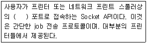
- UDP/IP
- TCP/IP
- Multicast
- Unicast
(정답률: 69%)
46. 다음 중 리눅스 블록 디바이스에 대한 장치파일과 설명으로 짝지어진 것이 틀린 것은?
- sda : SCSI 타입의 하드디스크 장치
- hda : IDE 타입의 하드디스크 장치
- st : 테이프 저장장치
- md : USB 디스크 장치
(정답률: 69%)
47. 다음 중 리눅스에서 사운드 카드를 설정하려 할 때, 필요한 드라이버나 유틸리티로 틀린 것은?
- OSS
- ALSA
- CUPS
- OSS/Free
(정답률: 74%)
48. 다음 중 일반적인 32bit 리눅스에서 하드웨어를 사용하기 위해 필요한 하드웨어 모듈이 저장 되는 디렉터리로 알맞은 것은?
- /lib/modules/커널버전/kernel/drivers
- /modules/커널버전/kernel/drivers
- /usr/커널버전/kernel/modules/drivers
- /drivers/커널버전/kernel/modules
(정답률: 52%)
2과목: 리눅스 활용
49. 다음 중 X 윈도우를 강제 종료시킬 수 있는 키의 조합으로 알맞은 것은?
- [CTRL]+[ALT]+[Delete]
- [CTRL]+[ALT]+[Enter]
- [CTRL]+[ALT]+[TAB]
- [CTRL]+[ALT]+[BackSpace]
(정답률: 75%)
50. 다음 ( 괄호 ) 안에 들어갈 라이브러리로 알맞은 것은?
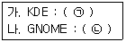
- (ㄱ) GTK - (ㄴ) QT
- (ㄱ) QT - (ㄴ) GTK
- (ㄱ) Xaw - (ㄴ) Motif
- (ㄱ) Motif - (ㄴ) Xaw
(정답률: 78%)
51. 다음 중 콘솔 모드로 부팅되는 리눅스 시스템을 X 윈도우로 부팅하려고 할 때 변경하는 파일로 알맞은 것은?
- /etc/fstab
- /etc/inittab
- /etc/xorg.conf
- /etc/sysconfig/desktop
(정답률: 71%)
52. 다음 중 이미지 합성 및 이미지 저장을 위해 사용되는 프로그램으로 알맞은 것은?
- XMMS
- MPlayer
- MTV
- GIMP
(정답률: 83%)
53. X 윈도우를추가로두번째터미널([CTRL]+[ALT]+[F8])에 실행시키려고 한다. 다음 중 ( 괄호 )안에 들어 갈 내용으로 알맞은 것은?
- :1
- :2
- :3
- :4
(정답률: 49%)
54. 다음 중 인텔 x86계열의 리눅스 운영체제에서 사용하는 X서버로 알맞은 것은?
- Xorg
- fvwm
- mwm
- twm
(정답률: 74%)
55. 다음 중 윈도우 매니저 프로그램으로 알맞은 것은?
- CORBA
- BMP
- AfterStep
- xv
(정답률: 54%)
56. 다음에서 설명하는 것으로 알맞은 것은?
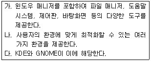
- 데스크톱
- 디스플레이 매니저
- 윈리스트
- 윈도우 메이커
(정답률: 64%)
57. 다음 설명으로 알맞은 LAN 토폴로지로 알맞은 것은?
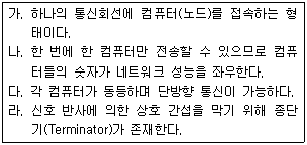
- 스타 토폴로지
- 버스 토폴로지
- 링 토폴로지
- 망(Mesh) 토폴로지
(정답률: 75%)
58. 다음에서 설명하는 프로토콜로 알맞은 것은?
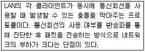
- CHAP
- CSMA
- CBCP
- CLNP
(정답률: 79%)
59. 다음 중 광섬유 케이블를 사용하여 설계된 링 구조의 통신망으로 알맞은 것은?
- Ethernet
- FDDI
- ATM
- CSMA/CD
(정답률: 66%)
60. 다음 중 패킷교환방식에 대한 설명으로 틀린 것은?
- 고정된 대역폭을 사용하여 전송한다.
- 패킷마다 전송로를 설립할 수 있다.
- 전달되지 않으면 송신자에서 통지할 수 있다.
- 각 패킷마다 오버헤드 비트가 존재한다.
(정답률: 53%)
61. 다음 중 OSI 7 계층 모델을 개발한 기관으로 알맞은 것은?
- ISO
- ANSI
- EIA
- IEEE
(정답률: 75%)
62. 다음 중 OSI 7계층의 물리 계층, 데이터링크 계층, 네트워크 계층을 지원하는 통신 장비로 알맞은 것은?
- 라우터
- 리피터
- 브리지
- 허브
(정답률: 78%)
63. 다음 설명하는 OSI 계층으로 알맞은 것은?
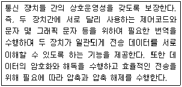
- 전송계층
- 세션계층
- 표현계층
- 응용계층
(정답률: 66%)
64. 다음 중 TCP 및 UDP 프로토콜과 가장 연관이 있는 OSI 계층으로 알맞은 것은?
- 데이터링크 계층
- 네트워크 계층
- 전송계층
- 세션계층
(정답률: 67%)
65. 다음 중 C 클래스 IP주소 대역의 기본 서브넷 마스크값으로 알맞은 것은?
- 255.0.0.0
- 255.255.0.0
- 255.255.255.0
- 255.255.255.255
(정답률: 85%)
66. 다음 중 B 클래스에 속한 IP주소로 알맞은 것은?
- 10.82.6.7
- 127.7.6.2
- 191.11.12.22
- 224.74.12.17
(정답률: 69%)
67. 다음 중 IP주소와 도메인을 관리하는 국제기구로 알맞은 것은?
- IETF
- W3C
- ICANN
- IEEE
(정답률: 54%)
68. 다음에서 설명하는 웹브라우저로 알맞은 것은?
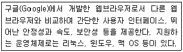
- Firefox
- Opera
- Safari
- Chrome
(정답률: 83%)
69. 다음 ( 괄호 )안에 들어갈 FTP 관련 명령어로 알맞은 것은?
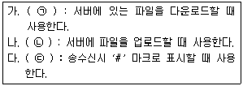
- (ㄱ) get - (ㄴ) put - (ㄷ) hash
- (ㄱ) get - (ㄴ) put - (ㄷ) mark
- (ㄱ) put - (ㄴ) get - (ㄷ) hash
- (ㄱ) put - (ㄴ) get - (ㄷ) mark
(정답률: 71%)
70. 다음 ( 괄호 ) 안에 들어갈 서비스 포트 번호로 알맞은 것은?
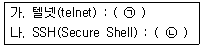
- (ㄱ) 21 - (ㄴ) 22
- (ㄱ) 22 - (ㄴ) 23
- (ㄱ) 23 - (ㄴ) 22
- (ㄱ) 23 - (ㄴ) 21
(정답률: 68%)
71. 다음에서 설명하는 전자우편 관련 프로토콜로 알맞은 것은?
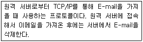
- SMTP
- SNMP
- POP3
- IMAP
(정답률: 57%)
72. 다음은 네트워크 주소를 설정하는 내용이다. ( 괄호 )안에 들어갈 명령어로 알맞은 것은?
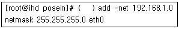
- route
- ifconfig
- ping
- hostname
(정답률: 60%)
73. 운영중인 리눅스 시스템에서 인터넷상의 다른 시스템에 접속할 때에 IP주소로는 접속이 가능 하지만, 도메인명으로는 접속이 불가능하다. 다음 중 변경해야할 파일명으로 가장 알맞은 것은?
- /etc/networks
- /etc/host.conf
- /etc/resolv.conf
- /etc/hosts
(정답률: 64%)
74. 다음 중 ifconfig 명령으로 확인 가능한 정보로 틀린 것은?
- MAC 주소
- 브로드캐스트 주소
- 넷마스크 주소
- 게이트웨이 주소
(정답률: 68%)
75. 다음 중 서버 가상화 프로그램을 사용할 경우 생성되는 네트워크 인터페이스로 알맞은 것은?
- ppp0
- virbr0
- dl0
- plip0
(정답률: 71%)
76. 다음 중 도메인명에 대한 정보를 조회할 때 사용하는 명령어 조합으로 알맞은 것은?
- ping, netstat
- ping, nslookup
- nslookup, dig
- dig, netstat
(정답률: 63%)
77. 다음 중 다수의 컴퓨터를 하나로 만든 후 병렬 프로그래밍을 통해 고성능의 수치 연산 시스템을 구축할 때 사용하는 것으로 알맞은 것은?
- 임베디드시스템
- 베어울프 클러스터(Beowulf Cluster)
- 고가용성 클러스터(HA Cluster)
- LVM(Logical Volume Manager)
(정답률: 54%)
78. 인터넷의 발달로 데이터의 양이 방대하게 늘어 나면서 빅데이터 시대에 접어 들었다. 다음 중 대용량의 데이터를 처리하기 위해 구성하는 클라우드 스토리지로 틀린 것은?
- 글러스터FS(GlusterFS)
- 하둡 분산파일시스템(HDFS)
- 오픈스택 스위프트(OpenStack Swift)
- 클라우드스택(Cloudstack)
(정답률: 41%)
79. 다음 중 리눅스 시스템에서 무료로 사용가능한 공개형 서버 가상화 기술의 조합으로 알맞은 것은?
- XEN, KVM
- XEN, JBoss
- KVM, JBoss
- WAS, JBoss
(정답률: 65%)
80. 다음 ( 괄호 ) 안에 알맞은 클라우드 컴퓨팅 서비스로 알맞은 것은?
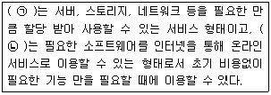
- (ㄱ) IaaS - (ㄴ) PaaS
- (ㄱ) SaaS - (ㄴ) IaaS
- (ㄱ) IaaS - (ㄴ) SaaS
- (ㄱ) SaaS - (ㄴ) PaaS
(정답률: 62%)